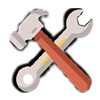
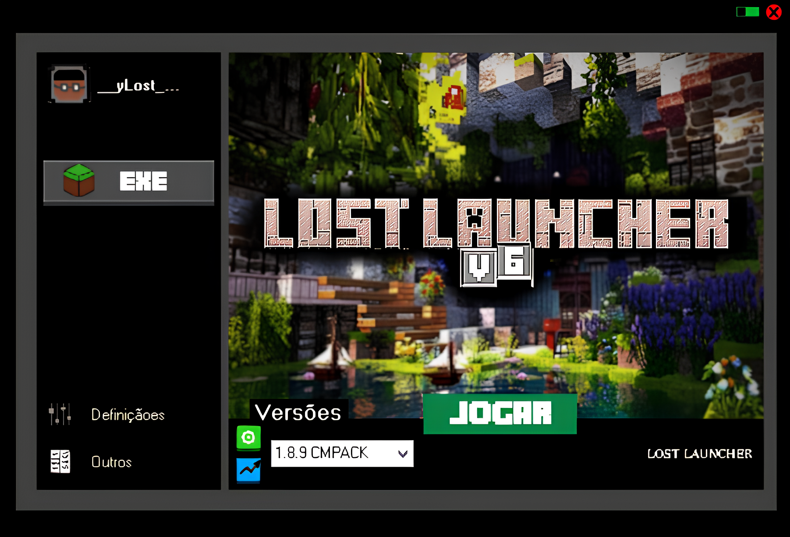
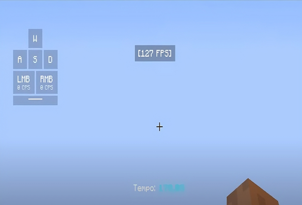

Recursos

F á c i l d e U s a r
Interface intuitiva para todos os jogadores.

M u i t o O T I M I Z A D O
Tenha mais FPS para seu jogo!
A t u a l i z a ç õ e s A u t o
Fique sempre na última versão.
C o m u n i d a d e
Fórum e suporte ativo.